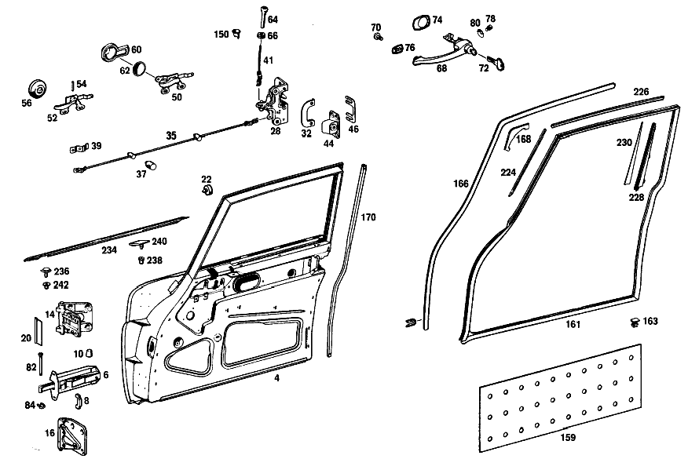

| № | Артикул | Название | Кол. | Примечание | Ограничение |
|---|---|---|---|---|---|
| 4 | A 110 720 06 05 | ОСТОВ ДВЕРИ | 1 | СПРАВА | |
| 6 | A 110 720 01 16 | КРОНШТЕЙН ДВЕРИ | - | ||
| 8 | A 110 723 00 96 | - БУФЕР | 2 | ||
| 10 | A 110 723 00 24 | - КОЛПАЧОК | - | [415] ПРИМЕЧ. ПО ЗАМЕНЕ ПРИМЕНИМО ТОЛЬКО ДЛЯ СТОЯЩИХ РЯДОМ ПОЗИЦИЙ | |
| 14 | A 110 720 04 37 | ШАРНИР | 1 | СВЕРХУ СПРАВА [002] 010 FROM CHASSIS 037908 ALSO INSTALLED ON,SEE FOOTNOTE 48;012 FROM CHASSIS 081224 ALSO INSTALLED ON,SEE FOOTNOTE 49 [048] 037871, 037872, 037876, 037880, 037882, 037885- 037892, 037894- 037906. [049] 081000, 081103, 081104, 081108, 081110, 081113, 081114, 081117, 081119, 081120, 081122, 081124- 081128, 081130, 081132- 081134, 081136, 081138, 081140- 081142, 081145- 081147, 081150- 081154, 081156, 081157, 081159, 081162- 081173, 081176- 081182, 081184- 081194, 081196- 081201, 081203- 081222. | |
| 16 | A 110 720 02 38 | ШАРНИР | 1 | СНИЗУ СПРАВА | |
| 20 | A 110 721 01 80 | УПЛОТНИТЕЛЬ | 2 | 70 MM TO SEAL DOOR HINGE,TOP [001] 010 UP TO CHASSIS 037907 EXCEPT FOR,SEE FOOTNOTE 48;012 UP TO CHASSIS 081223 EXCEPT FOR,SEE FOOTNOTE 49 [048] 037871, 037872, 037876, 037880, 037882, 037885- 037892, 037894- 037906. [049] 081000, 081103, 081104, 081108, 081110, 081113, 081114, 081117, 081119, 081120, 081122, 081124- 081128, 081130, 081132- 081134, 081136, 081138, 081140- 081142, 081145- 081147, 081150- 081154, 081156, 081157, 081159, 081162- 081173, 081176- 081182, 081184- 081194, 081196- 081201, 081203- 081222. | |
| 22 | A 111 987 10 40 | РЕЗИНОВЫЙ УПОР | 2 | AT WINDSHIELD PILLAR,TOP [005] 010 FROM CHASSIS 050273;012 FROM CHASSIS 111521 | |
| 28 | A 110 730 12 35 | ЗАМОК ДВЕРИ | 1 | RIGHT, LESS INTERIOR LOCKING MECHANISM Рулевое управление: Влево [004] 010 FROM CHASSIS 004466;012 FROM CHASSIS 009780 | |
| 32 | A 110 723 06 24 | ОБРАМЛЕНИЕ | - | ||
| 32 | A 108 723 02 24 | ОБРАМЛЕНИЕ | 1 | RIGHT BETWEEN LOCK AND DOOR LINING [004] 010 FROM CHASSIS 004466;012 FROM CHASSIS 009780 | |
| 35 | A 110 720 00 92 | ТЯГА | 2 | ВОДИТЕЛЬСКИЕ ДВЕРИ | |
| 37 | A 120 987 01 37 | ФИТИНГ | - | ||
| 39 | H 10 180 723 00 55 | ПРЕДОХРАНИТЕЛЬ | - | ||
| 41 | A 110 720 00 93 | ПРЕДОХР. БЛОКИР. ДВЕРИ | 2 | ||
| 44 | A 110 720 12 04 | ПЕТЛЯ | 1 | СПРАВА | |
| 46 | A 110 723 02 11 | ПЛАСТИНА | - | ||
| 46 | A 100 723 02 11 | Компенсационная пластина | NB | ПО НЕОБХОДИМОСТИ 2.0 MM [409] ПРИ МОНТАЖЕ ПОДОГНАТЬ ПО МЕСТУ | |
| 50 | A 110 760 10 61 | РУЧКА ВНУТРЕННЯЯ | 1 | RIGHT FRONT DOOR [006] 010 UP TO CHASSIS 021371 EXCEPT FOR 021350,021362-021364 | |
| 60 | A 110 766 06 11 | РОЗЕТКА | 1 | СПРАВА [006] 010 UP TO CHASSIS 021371 EXCEPT FOR 021350,021362-021364 | |
| 62 | A 110 766 06 90 | ВСТАВКА | 2 | [006] 010 UP TO CHASSIS 021371 EXCEPT FOR 021350,021362-021364 | |
| 64 | A 110 760 05 65 | ПРЕДОХРАНИТЕЛЬНАЯ ГОЛОВКА | 2 | ПРЕДОХР. БЛОКИР. ДВЕРИ | |
| 66 | A 000 997 42 81 | втулка | 2 | KNOB TO LOCK ROD [008] 010 K11/H31 GREY TRIM UP TO CHASSIS 049815;K12 BLUE TRIM UP TO CHASSIS 049954;K14/K3 TRIM UP TO CHASSIS 050103 | |
| 68 | A 110 766 07 01 | РУЧКА ДВЕРИ | 1 | СНАРУЖИ СЛЕВА | |
| 70 | A 120 766 00 15 | - БОЛТ | 2 | [402] БОЛЬШЕ НЕ ПОСТАВЛЯЕТСЯ | |
| 72 | A 000 766 11 06 | - Ключ | 2 | MARKED с THE LETTER "I" [043] WHEN ORDERING,STATE LETTER AND NUMBER OF LOCK | |
| 74 | A 110 766 00 05 | ПОДКЛАДКА | 2 | UNDER DOOR HANDLE REAR | |
| 76 | A 110 766 01 05 | ПОДКЛАДКА | - | ||
| 76 | A 120 766 00 05 | ПОДКЛАДКА | 2 | UNDER DOOR HANDLE,FRONT | |
| 78 | A 110 990 00 12 | БОЛТ | - | ||
| 78 | N 000912 006095 | Винт | 2 | DOOR HANDLE TO FRONT DOOR INTERIOR PLATE; M6X8 | |
| 80 | A 111 993 00 26 | ПРУЖИНА ДИСКОВАЯ | 2 | DOOR HANDLE TO FRONT DOOR INTERIOR PLATE | |
| 82 | A 110 991 03 07 | БОЛТ | 2 | ОГРАНИЧ.ХОДА ДВЕРИ НА СТОЙКЕ ПЕРЕД.СТЕНКИ | |
| 84 | A 000 994 00 51 | ПРЕДОХРАНИТЕЛЬ | - | ||
| 87 | A 110 720 14 55 | СТЕКЛО ПОВОРОТНОЕ | 1 | СПРАВА [009] 010 FROM CHASSIS 048081;012 FROM CHASSIS 105688 | |
| 89 | A 110 725 02 24 | - УПЛОТНИТЕЛЬ | 1 | RIGHT VENTILATOR WINDOW | |
| 91 | A 110 720 16 55 | - СТЕКЛО ПОВОРОТНОЕ | 1 | СПРАВА [009] 010 FROM CHASSIS 048081;012 FROM CHASSIS 105688 | |
| 93 | A 110 725 00 80 | - ПОДШИПНИК | 2 | СВЕРХУ | |
| 96 | A 110 720 02 66 | ЗАМКОВЫЙ БЛОК | 1 | ПОВОРОТНОЕ ОКНО ПРАВОЕ [009] 010 FROM CHASSIS 048081;012 FROM CHASSIS 105688 | |
| 99 | A 110 760 02 66 | КНОПКА | - | ||
| 99 | A 000 833 12 13 | КНОПКА | 2 | VENTILATOR WINDOW FASTENER | |
| 102 | A 110 760 03 67 | КОЛПАЧОК | 2 | КНОПКА | |
| 104 | A 110 720 06 15 | ПЛАНКА НАПРАВЛЯЮЩАЯ | 1 | RIGHT HINGE SIDE | |
| 106 | A 000 994 05 10 | Диск | 4 | WINDOW GUIDE RAILS TO FRONT DOOR INTERIOR PLATES | |
| 108 | A 000 990 22 91 | ГАЙКОДЕРЖАТЕЛЬ | - | ||
| 108 | A 001 990 67 91 | Гайкодержатель | 4 | WINDOW GUIDE RAILS TO FRONT DOOR INTERIOR PLATES | |
| 110 | A 000 985 18 30 | ПРОФИЛЬ ГЕРМЕТИЗИРУЮЩИЙ | 2 | 2000 MM [404] ЗАКАЗЫВАТЬ ПОГОННЫМИ МЕТРАМИ | |
| 112 | A 002 988 23 78 | Скоба | 10 | WINDOW GUIDE RAILS TO WINDOW FRAMES | |
| 114 | A 110 725 02 02 | СТЕКЛОПОДЪЕМНИК | - | ||
| 116 | A 000 768 01 05 | - ПРУЖИНА | - | ||
| 116 | A 000 768 09 05 | - Компенсационная пружина | - | ||
| 116 | A 000 768 07 34 | - пружина | 2 | ||
| 118 | A 110 720 00 45 | FE.ПОДЪЕМНАЯ ПЛАНКА | 2 | ||
| 120 | A 120 984 01 37 | ПОЛЗУН | - | ||
| 120 | A 115 586 00 72 | РЕМКОМПЛЕКТ | - | ||
| 120 | A 123 720 01 14 | Ремк-т стеклоподъемника | - | [047] NO LONGER AVAILABLE INDIVIDUALLY,INSTEAD:1X115 586 00 72 | |
| 122 | A 000 984 24 56 | Диск | - | [047] NO LONGER AVAILABLE INDIVIDUALLY,INSTEAD:1X115 586 00 72 | |
| 124 | A 000 990 05 48 | Диск | - | [402] БОЛЬШЕ НЕ ПОСТАВЛЯЕТСЯ [047] NO LONGER AVAILABLE INDIVIDUALLY,INSTEAD:1X115 586 00 72 | |
| 126 | A 110 725 00 10 | ЗАЩИТНОЕ СТЕКЛО | 2 | ||
| 128 | A 110 720 00 47 | ПЛАНКА КРЕПЕЖНАЯ | 2 | ||
| 130 | A 000 987 66 57 | Уплотнитель стекла | 2 | 340 MM AT CRANK OPERATED WINDOW,BOTTOM [402] БОЛЬШЕ НЕ ПОСТАВЛЯЕТСЯ [404] ЗАКАЗЫВАТЬ ПОГОННЫМИ МЕТРАМИ | |
| 132 | A 110 760 04 02 | КРИВОШИП | 2 | ||
| 134 | A 110 768 01 95 | ОБИВКА | 2 | ПОДВИЖН. СТЕКЛО | |
| 136 | A 110 768 00 13 | ШАЙБА | - | ||
| 138 | A 000 985 03 30 | ПРОФИЛЬ ГЕРМЕТИЗИРУЮЩИЙ | - | ||
| 140 | A 001 988 17 78 | СКОБА | 6 | SEAL RAILS TO FRONT DOORS | |
| 142 | A 001 988 23 78 | Скоба | 6 | SEAL RAILS TO FRONT DOORS | |
| 145 | A 111 720 16 51 | Обшивка | 1 | BOTTOM,RIGHT FRONT DOOR [015] 012 FROM CHASSIS 124453 ALSO INSTALLED ON 120370-121079 COLOR:BLUE FROM CHASSIS 125083 COLOR:GREY FROM CHASSIS 126748 COLOR:BROWN FROM CHASSIS 129311 COLOR:GREEN [017] WHEN ORDERING,STATE COLOR AND CHASSIS NO. | |
| 148 | A 001 988 28 78 | СКОБА | - | ||
| 148 | A 002 988 45 78 | Скоба | 8 | WINDOW MOULDINGS TO EDGES | |
| 150 | A 112 725 01 70 | РОЗЕТКА | - | [415] ПРИМЕЧ. ПО ЗАМЕНЕ ПРИМЕНИМО ТОЛЬКО ДЛЯ СТОЯЩИХ РЯДОМ ПОЗИЦИЙ | |
| 152 | A 111 720 06 51 | Обшивка | 1 | FRONT,RIGHT FRONT DOOR [402] БОЛЬШЕ НЕ ПОСТАВЛЯЕТСЯ [018] WHEN ORDERING,STATE COLOR TONE AND CHASSIS NO. | |
| 154 | A 111 720 08 51 | Обшивка | 1 | TOP,RIGHT FRONT DOOR [402] БОЛЬШЕ НЕ ПОСТАВЛЯЕТСЯ [018] WHEN ORDERING,STATE COLOR TONE AND CHASSIS NO. | |
| 156 | A 111 720 10 51 | Обшивка | 1 | REAR,RIGHT FRONT DOOR [402] БОЛЬШЕ НЕ ПОСТАВЛЯЕТСЯ [018] WHEN ORDERING,STATE COLOR TONE AND CHASSIS NO. | |
| 159 | A 111 727 52 90 | ШУМОИЗОЛЯЦИЯ | - | ||
| 159 | A 123 727 00 90 | ШУМОИЗОЛЯЦИЯ | - | ||
| 159 | A 110 727 03 90 | Шумоизол. двери водителя | - | ||
| 159 | A 210 682 00 08 | Шумоизоляция двери | - | [409] ПРИ МОНТАЖЕ ПОДОГНАТЬ ПО МЕСТУ | |
| 159 | A 168 682 03 08 | Демпфирование | 2 | ||
| 161 | A 110 720 02 78 | УПЛОТНИТЕЛЬНАЯ РАМА | 1 | для RIGHT FRONT DOOR | |
| 163 | A 001 988 24 78 | Скоба | 14 | ||
| 166 | A 110 720 02 97 | ЗАЩИТА КРОМОК | 1 | AT FRONT PANEL PILLAR AND FRONT,ROOF RAIL,для RIGHT FRONT DOOR | |
| 168 | A 110 727 01 80 | РУЧКА | - | ||
| 170 | A 110 727 02 31 | УПЛОТНИТЕЛЬ | - | ||
| 170 | A 110 727 06 31 | УПЛОТНИТЕЛЬ | 1 | RIGHT для CENTRAL PILLAR,FRONT DOOR | |
| 178 | A 111 720 02 62 | Обшивка | 1 | RIGHT FRONT DOOR FABRIC TRIM [402] БОЛЬШЕ НЕ ПОСТАВЛЯЕТСЯ [017] WHEN ORDERING,STATE COLOR AND CHASSIS NO. [021] 012 FROM CHASSIS 075630 | |
| 192 | A 111 720 03 75 | - РУЧКА | 2 | FRONT DOOR POCKET [034] 012 UP TO CHASSIS 075629 | |
| 194 | A 111 727 00 80 | - РУЧКА | 2 | FRONT DOOR POCKET [021] 012 FROM CHASSIS 075630 | |
| 196 | A 111 727 01 82 | - МОЛДИНГ | 2 | FRONT DOOR POCKET [019] 012 UP TO CHASSIS 036825 EXCEPT FOR,SEE FOOTNOTE 50 [050] 036625, 036637, 036638, 036640, 036647, 036651- 036653, 036655, 036656, 036658- 036660, 036662- 036665, 036667- 036669, 036673, 036674, 036676- 036679, 036681- 036683, 036685- 036690, 036692, 036695- 036708, 036710- 036724, 036726, 036727, 036729, 036730, 036732- 036735, 036737- 036740, 036742, 036744- 036747, 036749, 036750, 036753- 036762, 036764- 036781, 036783- 036799, 036801- 036824. | |
| 198 | A 111 727 00 82 | - МОЛДИНГ | - | ||
| 204 | A 111 727 00 72 | - ПЛАНКА | - | ||
| 208 | A 111 727 07 22 | - ДЕКОР. НАКЛАДКА | 2 | FRONT DOOR,CENTER [018] WHEN ORDERING,STATE COLOR TONE AND CHASSIS NO. [035] 012 FROM CHASSIS 036826 ALSO INSTALLED ON,SEE FOOTNOTE 50 [050] 036625, 036637, 036638, 036640, 036647, 036651- 036653, 036655, 036656, 036658- 036660, 036662- 036665, 036667- 036669, 036673, 036674, 036676- 036679, 036681- 036683, 036685- 036690, 036692, 036695- 036708, 036710- 036724, 036726, 036727, 036729, 036730, 036732- 036735, 036737- 036740, 036742, 036744- 036747, 036749, 036750, 036753- 036762, 036764- 036781, 036783- 036799, 036801- 036824. | |
| 210 | A 111 727 03 72 | - ПЛАНКА | 2 | [035] 012 FROM CHASSIS 036826 ALSO INSTALLED ON,SEE FOOTNOTE 50 [050] 036625, 036637, 036638, 036640, 036647, 036651- 036653, 036655, 036656, 036658- 036660, 036662- 036665, 036667- 036669, 036673, 036674, 036676- 036679, 036681- 036683, 036685- 036690, 036692, 036695- 036708, 036710- 036724, 036726, 036727, 036729, 036730, 036732- 036735, 036737- 036740, 036742, 036744- 036747, 036749, 036750, 036753- 036762, 036764- 036781, 036783- 036799, 036801- 036824. | |
| 214 | A 111 727 06 82 | - МОЛДИНГ | 1 | TOP RIGHT,FRONT DOOR LINING [039] 012 FROM CHASSIS 051783 | |
| 216 | A 111 737 02 72 | - ПЛАНКА | 2 | GARNISH MOULDING TO DOOR LINING [039] 012 FROM CHASSIS 051783 | |
| 220 | A 111 727 04 22 | ДЕКОР. НАКЛАДКА | 1 | UNDER RIGHT FRONT DOOR WINDOW MOULDING [018] WHEN ORDERING,STATE COLOR TONE AND CHASSIS NO. [019] 012 UP TO CHASSIS 036825 EXCEPT FOR,SEE FOOTNOTE 50 [050] 036625, 036637, 036638, 036640, 036647, 036651- 036653, 036655, 036656, 036658- 036660, 036662- 036665, 036667- 036669, 036673, 036674, 036676- 036679, 036681- 036683, 036685- 036690, 036692, 036695- 036708, 036710- 036724, 036726, 036727, 036729, 036730, 036732- 036735, 036737- 036740, 036742, 036744- 036747, 036749, 036750, 036753- 036762, 036764- 036781, 036783- 036799, 036801- 036824. | |
| 222 | A 111 727 00 86 | МОЛДИНГ | 2 | UNDER WINDOW MOULDING [019] 012 UP TO CHASSIS 036825 EXCEPT FOR,SEE FOOTNOTE 50 [050] 036625, 036637, 036638, 036640, 036647, 036651- 036653, 036655, 036656, 036658- 036660, 036662- 036665, 036667- 036669, 036673, 036674, 036676- 036679, 036681- 036683, 036685- 036690, 036692, 036695- 036708, 036710- 036724, 036726, 036727, 036729, 036730, 036732- 036735, 036737- 036740, 036742, 036744- 036747, 036749, 036750, 036753- 036762, 036764- 036781, 036783- 036799, 036801- 036824. | |
| 224 | A 110 728 02 31 | МОЛДИНГ | 1 | FRONT RIGHT,FRONT DOOR WINDOW FRAME | |
| 226 | A 110 728 04 31 | МОЛДИНГ | 1 | TOP RIGHT,FRONT DOOR WINDOW FRAME | |
| 228 | A 110 720 02 81 | МОЛДИНГ | 1 | REAR RIGHT,WINDOW FRAME | |
| 230 | A 110 728 00 80 | УПЛОТНИТЕЛЬ | 2 | FRONT DOOR GARNISH MOULDINGS,REAR | |
| 234 | A 110 728 04 30 | МОЛДИНГ | 1 | ДВЕРЬ ВОДИТЕЛЯ СПРАВА [041] 010 FROM CHASSIS 034796;012 FROM CHASSIS 074376 | |
| 236 | A 110 720 02 39 | ДЕРЖАТЕЛЬ | 2 | [041] 010 FROM CHASSIS 034796;012 FROM CHASSIS 074376 | |
| 238 | A 000 988 15 81 | Крепежная втулка | - | ||
| 238 | A 001 988 20 81 | КНОПКА НАЖИМНАЯ | - | ||
| 238 | A 008 997 03 81 | КАБ. ВТУЛКА | - | ||
| 238 | A 001 988 20 81 | КНОПКА НАЖИМНАЯ | - | ||
| 238 | A 001 988 76 81 | Кнопка-застежка | 8 | ||
| 240 | A 000 988 42 81 | КНОПКА НАЖИМНАЯ | 8 | ||
| 242 | A 000 988 03 27 | КРЕПЕЖН. ВТУЛКА | - | [415] ПРИМЕЧ. ПО ЗАМЕНЕ ПРИМЕНИМО ТОЛЬКО ДЛЯ СТОЯЩИХ РЯДОМ ПОЗИЦИЙ | |
| A 110 720 01 05 | ОСТОВ ДВЕРИ | - | |||
| A 110 720 05 05 | ОСТОВ ДВЕРИ | 1 | СЛЕВА | ||
| A 110 720 02 05 | ОСТОВ ДВЕРИ | - | |||
| A 110 720 00 16 | КРОНШТЕЙН ДВЕРИ | - | |||
| A 110 720 03 16 | КРОНШТЕЙН ДВЕРИ | - | |||
| A 110 720 08 16 | КРОНШТЕЙН ДВЕРИ | 2 | |||
| A 110 723 08 24 | - ОБРАМЛЕНИЕ | 4 | |||
| N 000933 006102 | Винт | - | |||
| N 304017 006016 | Винт с 6-гранной головкой | 4 | ДЕРЖАТЕЛЬ ДВЕРИ НА ДВЕРИ ВОДИТ.; M6X16 | ||
| A 000 990 41 91 | ГАЙКОДЕРЖАТЕЛЬ | - | [415] ПРИМЕЧ. ПО ЗАМЕНЕ ПРИМЕНИМО ТОЛЬКО ДЛЯ СТОЯЩИХ РЯДОМ ПОЗИЦИЙ | ||
| A 000 990 53 91 | ГАЙКОДЕРЖАТЕЛЬ | - | [415] ПРИМЕЧ. ПО ЗАМЕНЕ ПРИМЕНИМО ТОЛЬКО ДЛЯ СТОЯЩИХ РЯДОМ ПОЗИЦИЙ | ||
| A 000 990 83 91 | ГАЙКОДЕРЖАТЕЛЬ | - | |||
| A 000 990 71 91 | Гайкодержатель | 4 | |||
| N 006797 006145 | Зубчатая шайба | 2 | ДЕРЖАТЕЛЬ ДВЕРИ НА ДВЕРИ ВОДИТ. | ||
| N 000934 006007 | Гайка | 2 | ДЕРЖАТЕЛЬ ДВЕРИ НА ДВЕРИ ВОДИТ. | ||
| N 009021 006103 | Шайба | - | |||
| N 009021 006208 | Шайба | 2 | ДЕРЖАТЕЛЬ ДВЕРИ НА ДВЕРИ ВОДИТ.; 6 MM | ||
| A 110 720 01 37 | ШАРНИР | 1 | СВЕРХУ СЛЕВА [001] 010 UP TO CHASSIS 037907 EXCEPT FOR,SEE FOOTNOTE 48;012 UP TO CHASSIS 081223 EXCEPT FOR,SEE FOOTNOTE 49 [048] 037871, 037872, 037876, 037880, 037882, 037885- 037892, 037894- 037906. [049] 081000, 081103, 081104, 081108, 081110, 081113, 081114, 081117, 081119, 081120, 081122, 081124- 081128, 081130, 081132- 081134, 081136, 081138, 081140- 081142, 081145- 081147, 081150- 081154, 081156, 081157, 081159, 081162- 081173, 081176- 081182, 081184- 081194, 081196- 081201, 081203- 081222. | ||
| A 110 720 05 37 | ШАРНИР | - | |||
| A 110 720 03 37 | ШАРНИР | 1 | СВЕРХУ СЛЕВА [002] 010 FROM CHASSIS 037908 ALSO INSTALLED ON,SEE FOOTNOTE 48;012 FROM CHASSIS 081224 ALSO INSTALLED ON,SEE FOOTNOTE 49 [048] 037871, 037872, 037876, 037880, 037882, 037885- 037892, 037894- 037906. [049] 081000, 081103, 081104, 081108, 081110, 081113, 081114, 081117, 081119, 081120, 081122, 081124- 081128, 081130, 081132- 081134, 081136, 081138, 081140- 081142, 081145- 081147, 081150- 081154, 081156, 081157, 081159, 081162- 081173, 081176- 081182, 081184- 081194, 081196- 081201, 081203- 081222. | ||
| A 110 720 02 37 | ШАРНИР | 1 | СВЕРХУ СПРАВА [001] 010 UP TO CHASSIS 037907 EXCEPT FOR,SEE FOOTNOTE 48;012 UP TO CHASSIS 081223 EXCEPT FOR,SEE FOOTNOTE 49 [048] 037871, 037872, 037876, 037880, 037882, 037885- 037892, 037894- 037906. [049] 081000, 081103, 081104, 081108, 081110, 081113, 081114, 081117, 081119, 081120, 081122, 081124- 081128, 081130, 081132- 081134, 081136, 081138, 081140- 081142, 081145- 081147, 081150- 081154, 081156, 081157, 081159, 081162- 081173, 081176- 081182, 081184- 081194, 081196- 081201, 081203- 081222. | ||
| A 110 720 06 37 | ШАРНИР | - | |||
| A 110 720 01 38 | ШАРНИР | 1 | ВНИЗУ СЛЕВА | ||
| A 000 997 04 88 | - Пресс-масленка | 4 | |||
| N 000965 008008 | Винт | 16 | |||
| N 000965 008051 | Винт | 16 | M8X20\-8.8\-H | ||
| N 000933 008147 | Винт | - | |||
| N 304017 008021 | Винт с 6-гранной головкой | 12 | ДВЕРЬ ВОДИТ. НА СТОЙКЕ ПЕРЕДН.СТЕНКИ; M8X20 | ||
| A 136 990 39 40 | ШАЙБА | - | |||
| A 180 990 06 40 | ШАЙБА | 12 | ДВЕРЬ ВОДИТ. НА СТОЙКЕ ПЕРЕДН.СТЕНКИ | ||
| N 912004 008102 | Пружинное кольцо | 12 | ДВЕРЬ ВОДИТ. НА СТОЙКЕ ПЕРЕДН.СТЕНКИ | ||
| A 000 987 53 51 | УПЛОТН. РЕЗИНА | - | |||
| A 110 728 01 80 | УПЛОТНИТЕЛЬ | - | |||
| A 111 987 11 40 | РЕЗИНОВЫЙ УПОР | 2 | AT WINDSHIELD PILLAR,TOP [005] 010 FROM CHASSIS 050273;012 FROM CHASSIS 111521 | ||
| A 111 987 12 40 | Резиновый буфер | 2 | AT WINDSHIELD PILLAR,TOP [005] 010 FROM CHASSIS 050273;012 FROM CHASSIS 111521 | ||
| A 111 987 14 40 | РЕЗИНОВЫЙ УПОР | 2 | AT WINDSHIELD PILLAR,TOP [005] 010 FROM CHASSIS 050273;012 FROM CHASSIS 111521 | ||
| A 108 987 03 40 | РЕЗИНОВЫЙ УПОР | 2 | [005] 010 FROM CHASSIS 050273;012 FROM CHASSIS 111521 | ||
| A 110 720 09 35 | ЗАМОК | - | Рулевое управление: Влево [003] 010 UP TO CHASSIS 004465;012 UP TO CHASSIS 009779 | ||
| A 110 720 11 35 | ЗАМОК | - | |||
| A 110 720 15 35 | ЗАМОК | 1 | LEFT, с INTERIOR LOCKING MECHANISM Рулевое управление: Влево [004] 010 FROM CHASSIS 004466;012 FROM CHASSIS 009780 | ||
| A 110 720 10 35 | ЗАМОК | - | Рулевое управление: Вправо [003] 010 UP TO CHASSIS 004465;012 UP TO CHASSIS 009779 | ||
| A 110 720 12 35 | ЗАМОК | - | |||
| A 110 720 16 35 | ЗАМОК | 1 | RIGHT, с INTERIOR LOCKING MECHANISM Рулевое управление: Вправо [004] 010 FROM CHASSIS 004466;012 FROM CHASSIS 009780 | ||
| A 110 730 06 35 | ЗАМОК ДВЕРИ | - | Рулевое управление: Влево [003] 010 UP TO CHASSIS 004465;012 UP TO CHASSIS 009779 | ||
| A 110 730 08 35 | ЗАМОК ДВЕРИ | - | |||
| A 110 730 05 35 | ЗАМОК ДВЕРИ | - | Рулевое управление: Вправо [003] 010 UP TO CHASSIS 004465;012 UP TO CHASSIS 009779 | ||
| A 110 730 07 35 | ЗАМОК ДВЕРИ | - | |||
| A 110 730 11 35 | ЗАМОК ДВЕРИ | 1 | LEFT, LESS INTERIOR LOCKING MECHANISM Рулевое управление: Вправо [004] 010 FROM CHASSIS 004466;012 FROM CHASSIS 009780 | ||
| A 110 723 03 24 | ОБРАМЛЕНИЕ | 1 | LEFT BETWEEN LOCK AND DOOR LINING [003] 010 UP TO CHASSIS 004465;012 UP TO CHASSIS 009779 | ||
| A 110 723 04 24 | ОБРАМЛЕНИЕ | 1 | RIGHT BETWEEN LOCK AND DOOR LINING [003] 010 UP TO CHASSIS 004465;012 UP TO CHASSIS 009779 | ||
| A 110 723 05 24 | ОБРАМЛЕНИЕ | - | |||
| A 108 723 01 24 | Окаймление | 1 | LEFT BETWEEN LOCK AND DOOR LINING [004] 010 FROM CHASSIS 004466;012 FROM CHASSIS 009780 | ||
| A 000 990 53 91 | ГАЙКОДЕРЖАТЕЛЬ | - | [415] ПРИМЕЧ. ПО ЗАМЕНЕ ПРИМЕНИМО ТОЛЬКО ДЛЯ СТОЯЩИХ РЯДОМ ПОЗИЦИЙ | ||
| A 000 990 83 91 | ГАЙКОДЕРЖАТЕЛЬ | - | |||
| A 000 990 71 91 | Гайкодержатель | 8 | DOOR LOCK TO FRONT DOOR INTERIOR PLATE | ||
| A 000 990 33 30 | Болт с потайной головкой | 4 | DOOR LOCK TO FRONT DOOR INTERIOR PLATE | ||
| N 007988 006124 | БОЛТ | 4 | DOOR LOCK TO FRONT DOOR INTERIOR PLATE | ||
| N 007983 002203 | Шуруп | 4 | EDGING TO DOOR [003] 010 UP TO CHASSIS 004465;012 UP TO CHASSIS 009779 | ||
| N 007988 004103 | БОЛТ | 4 | EDGING TO DOOR [004] 010 FROM CHASSIS 004466;012 FROM CHASSIS 009780 | ||
| A 110 720 02 92 | ТЯГА | 2 | RIGHT FRONT DOOR ON SPECIAL REQUEST,ADDITIONAL LOCKING MECHANISM Рулевое управление: Влево | ||
| A 110 720 01 92 | ТЯГА | 2 | LEFT FRONT DOOR ON SPECIAL REQUEST,ADDITIONAL LOCKING MECHANISM Рулевое управление: Вправо [402] БОЛЬШЕ НЕ ПОСТАВЛЯЕТСЯ | ||
| A 002 988 83 78 | Скоба | - | |||
| A 006 988 63 78 | Скоба | 4 | |||
| H 10 180 723 00 55 | ПРЕДОХРАНИТЕЛЬ | - | |||
| A 100 994 01 60 | предохранитель | 6 | |||
| A 110 720 03 04 | ПЕТЛЯ | - | |||
| A 110 720 05 04 | ПЕТЛЯ | - | |||
| A 110 720 11 04 | ПЕТЛЯ | 1 | СЛЕВА | ||
| A 110 720 04 04 | ПЕТЛЯ | - | |||
| H 10 120 723 02 05 | ПОДКЛАДКА | - | |||
| H 10 120 723 03 05 | ПОДКЛАДКА | - | |||
| A 110 723 03 11 | ПЛАСТИНА | NB | ПО НЕОБХОДИМОСТИ 2.6 MM | ||
| N 007987 006130 | БОЛТ | 6 | |||
| A 110 760 05 61 | РУЧКА ВНУТРЕННЯЯ | - | |||
| A 110 760 09 61 | РУЧКА ВНУТРЕННЯЯ | 1 | LEFT FRONT DOOR [006] 010 UP TO CHASSIS 021371 EXCEPT FOR 021350,021362-021364 | ||
| A 110 760 06 61 | РУЧКА ВНУТРЕННЯЯ | - | |||
| N 007985 006132 | Винт | 4 | INTERIOR HANDLE TO FRONT DOOR INTERIOR PLATE [402] БОЛЬШЕ НЕ ПОСТАВЛЯЕТСЯ | ||
| A 000 990 41 91 | ГАЙКОДЕРЖАТЕЛЬ | - | |||
| A 000 990 53 91 | ГАЙКОДЕРЖАТЕЛЬ | - | [415] ПРИМЕЧ. ПО ЗАМЕНЕ ПРИМЕНИМО ТОЛЬКО ДЛЯ СТОЯЩИХ РЯДОМ ПОЗИЦИЙ | ||
| A 000 990 83 91 | ГАЙКОДЕРЖАТЕЛЬ | - | |||
| A 000 990 71 91 | Гайкодержатель | 4 | INTERIOR HANDLE TO FRONT DOOR INTERIOR PLATE | ||
| A 000 984 17 55 | ШАЙБА | 4 | INTERIOR HANDLE TO FRONT DOOR INTERIOR PLATE [402] БОЛЬШЕ НЕ ПОСТАВЛЯЕТСЯ | ||
| A 110 766 01 11 | РОЗЕТКА | - | |||
| A 110 766 05 11 | РОЗЕТКА | 1 | СЛЕВА [006] 010 UP TO CHASSIS 021371 EXCEPT FOR 021350,021362-021364 | ||
| A 110 766 02 11 | РОЗЕТКА | - | |||
| N 007987 004119 | БОЛТ | 2 | ESCUTCHEON TO INTERIOR HANDLE MOUNTING PLATE [006] 010 UP TO CHASSIS 021371 EXCEPT FOR 021350,021362-021364 | ||
| A 110 766 00 90 | ВСТАВКА | - | |||
| A 110 766 05 90 | ВСТАВКА | - | |||
| A 110 760 01 65 | КНОПКА | - | |||
| A 110 760 02 65 | КНОПКА | - | |||
| A 110 760 03 65 | КНОПКА | - | |||
| A 110 760 04 65 | КНОПКА | - | |||
| A 110 766 01 01 | РУЧКА ДВЕРИ | - | |||
| A 110 766 03 01 | РУЧКА ДВЕРИ | - | |||
| A 110 766 02 01 | РУЧКА ДВЕРИ | - | |||
| A 110 766 04 01 | РУЧКА ДВЕРИ | - | |||
| A 110 766 08 01 | РУЧКА ДВЕРИ | 1 | СНАРУЖИ СПРАВА | ||
| H 10 120 766 01 15 | - БОЛТ | - | |||
| A 000 766 19 06 | Ключ | 1 | DOOR HANDLE AND FILLER CAP [402] БОЛЬШЕ НЕ ПОСТАВЛЯЕТСЯ [044] STATE LETTER OF KEY BITTING WHEN ORDERING | ||
| A 120 991 05 05 | БОЛТ | - | |||
| N 912001 005000 | ПРЕДОХРАНИТЕЛЬ | 2 | ОГРАНИЧ.ХОДА ДВЕРИ НА СТОЙКЕ ПЕРЕД.СТЕНКИ | ||
| A 110 720 01 55 | СТЕКЛО ПОВОРОТНОЕ | - | |||
| A 110 720 13 55 | СТЕКЛО ПОВОРОТНОЕ | 1 | СЛЕВА [009] 010 FROM CHASSIS 048081;012 FROM CHASSIS 105688 | ||
| A 110 720 02 55 | СТЕКЛО ПОВОРОТНОЕ | - | |||
| A 110 725 01 24 | - УПЛОТНИТЕЛЬ | 1 | LEFT VENTILATOR WINDOW | ||
| A 110 720 03 55 | - СТЕКЛО ПОВОРОТНОЕ | - | |||
| A 110 720 15 55 | - СТЕКЛО ПОВОРОТНОЕ | 1 | СЛЕВА [009] 010 FROM CHASSIS 048081;012 FROM CHASSIS 105688 | ||
| A 110 720 04 55 | - СТЕКЛО ПОВОРОТНОЕ | - | |||
| N 007987 004134 | - БОЛТ | 4 | TOP MOUNTING TO RETAINING FRAME | ||
| N 007985 004140 | Винт | 4 | SWIVEL WINDOW TO FRONT DOOR,TOP | ||
| N 000137 004202 | Пружинная шайба | 4 | SWIVEL WINDOW TO FRONT DOOR,TOP | ||
| A 110 720 01 66 | ЗАМКОВЫЙ БЛОК | 1 | ПОВОРОТНОЕ ОКНО ЛЕВОЕ [009] 010 FROM CHASSIS 048081;012 FROM CHASSIS 105688 | ||
| N 007985 006157 | Винт | - | M6X12 | ||
| N 000000 001145 | Винт с 6-гр. глвк | 8 | SWIVEL WINDOW LOCK TO DOOR; M6X12 | ||
| A 094 990 68 10 | Пружинное кольцо | 4 | SWIVEL WINDOW LOCK TO DOOR | ||
| N 000137 006204 | Пружинная шайба | 4 | SWIVEL WINDOW LOCK TO DOOR | ||
| A 000 984 17 55 | ШАЙБА | 2 | SWIVEL WINDOW LOCK TO DOOR [402] БОЛЬШЕ НЕ ПОСТАВЛЯЕТСЯ | ||
| N 000931 008179 | БОЛТ | 2 | SWIVEL WINDOW LOCK TO SWIVEL WINDOW [010] 010 UP TO CHASSIS 048080;012 UP TO CHASSIS 105687 | ||
| N 000933 006130 | Винт | 2 | SWIVEL WINDOW LOCK TO SWIVEL WINDOW [009] 010 FROM CHASSIS 048081;012 FROM CHASSIS 105688 | ||
| A 110 760 00 66 | КНОПКА | - | |||
| A 110 760 01 66 | КНОПКА | - | |||
| N 007985 004141 | Винт | 2 | KNOB TO VENTILATOR WINDOW FASTENER | ||
| N 000137 004202 | Пружинная шайба | 2 | KNOB TO VENTILATOR WINDOW FASTENER | ||
| A 110 760 00 67 | КОЛПАЧОК | - | |||
| A 110 760 02 67 | КОЛПАЧОК | - | |||
| A 110 720 03 15 | ПЛАНКА НАПРАВЛЯЮЩАЯ | - | |||
| A 110 720 05 15 | ПЛАНКА НАПРАВЛЯЮЩАЯ | 1 | LEFT HINGE SIDE | ||
| A 110 720 04 15 | ПЛАНКА НАПРАВЛЯЮЩАЯ | - | |||
| A 002 988 23 78 | Скоба | 2 | [012] 010 FROM CHASSIS 031149;012 FROM CHASSIS 067782 | ||
| N 007985 006149 | Винт | - | |||
| N 007985 006580 | Винт | 4 | WINDOW GUIDE RAILS TO FRONT DOOR INTERIOR PLATES | ||
| A 094 990 68 10 | Пружинное кольцо | 4 | WINDOW GUIDE RAILS TO FRONT DOOR INTERIOR PLATES | ||
| A 000 990 27 91 | ГАЙКОДЕРЖАТЕЛЬ | - | |||
| A 000 985 10 30 | ПРОФИЛЬ ГЕРМЕТИЗИРУЮЩИЙ | - | |||
| A 000 985 12 30 | ПРОФИЛЬ ГЕРМЕТИЗИРУЮЩИЙ | - | |||
| A 000 985 13 30 | ПРОФИЛЬ ГЕРМЕТИЗИРУЮЩИЙ | - | |||
| A 000 985 14 30 | ПРОФИЛЬ ГЕРМЕТИЗИРУЮЩИЙ | - | |||
| A 001 988 08 78 | СКОБА | - | |||
| A 000 989 19 85 | КЛЕЙКАЯ ЛЕНТА | 4 | 15X1X40 MM TO SEAL WINDOW GUIDE RAILS IN THE CORNERS [404] ЗАКАЗЫВАТЬ ПОГОННЫМИ МЕТРАМИ [045] 010 UP TO CHASSIS 068853;012 UP TO CHASSIS 158521 | ||
| A 110 725 02 93 | КОЛПАЧОК | 4 | 15X1X40 MM TO SEAL WINDOW GUIDE RAILS IN THE CORNERS [404] ЗАКАЗЫВАТЬ ПОГОННЫМИ МЕТРАМИ [046] 010 FROM CHASSIS 068854;012 FROM CHASSIS 158522 | ||
| A 110 725 01 02 | СТЕКЛОПОДЪЕМНИК | - | |||
| A 115 725 09 02 | Стеклоподъемник | 1 | СЛЕВА | ||
| A 115 725 10 02 | Стеклоподъемник | 1 | СПРАВА | ||
| N 007985 006149 | Винт | - | |||
| N 007985 006580 | Винт | 8 | WINDOW REGULATOR TO INTERIOR PLATE | ||
| A 094 990 68 10 | Пружинное кольцо | 8 | WINDOW REGULATOR TO INTERIOR PLATE | ||
| A 000 994 03 60 | ПРЕДОХРАНИТЕЛЬ | - | |||
| N 912002 010001 | Механический фиксатор | - | [047] NO LONGER AVAILABLE INDIVIDUALLY,INSTEAD:1X115 586 00 72 | ||
| A 115 586 00 72 | РЕМКОМПЛЕКТ | - | |||
| A 123 720 01 14 | Ремк-т стеклоподъемника | 1 | |||
| N 007985 006149 | Винт | - | |||
| N 007985 006580 | Винт | 4 | CRANK OPERATED WINDOW TO WINDOW REGULATOR RAILS | ||
| N 006797 006145 | Зубчатая шайба | 4 | CRANK OPERATED WINDOW TO WINDOW REGULATOR RAILS | ||
| A 110 760 01 02 | КРИВОШИП | - | |||
| A 110 760 02 02 | КРИВОШИП | - | |||
| A 110 760 03 02 | КРИВОШИП | - | |||
| N 007987 004135 | БОЛТ | 2 | ПОВОРОТНАЯ РУЧКА НА СТЕКЛОПОДЪЁМНИКЕ | ||
| N 006797 004333 | Зубчатая шайба | 2 | ПОВОРОТНАЯ РУЧКА НА СТЕКЛОПОДЪЁМНИКЕ | ||
| A 110 768 00 95 | ОБИВКА | - | |||
| A 108 768 01 13 | Дистанционная шайба | 2 | ПОДВИЖН. СТЕКЛО | ||
| A 121 725 01 66 | УПЛОТНИТЕЛЬ | - | |||
| A 115 725 09 65 | Уплотнительная планка | 4 | 444 MM OUTSIDE AND INSIDE,CRANK OPERATED WINDOWS [404] ЗАКАЗЫВАТЬ ПОГОННЫМИ МЕТРАМИ | ||
| A 110 720 01 51 | Обшивка | - | [014] 010 UP TO CHASSIS 036967 COLOR:BROWN AND GREY UP TO CHASSIS 037405 COLOR:BLUE EXCEPT FOR 030986,030987 | ||
| A 110 720 05 51 | Обшивка | - | [014] 010 UP TO CHASSIS 036967 COLOR:BROWN AND GREY UP TO CHASSIS 037405 COLOR:BLUE EXCEPT FOR 030986,030987 | ||
| A 111 720 11 51 | Обшивка | - | [014] 010 UP TO CHASSIS 036967 COLOR:BROWN AND GREY UP TO CHASSIS 037405 COLOR:BLUE EXCEPT FOR 030986,030987 | ||
| A 111 720 15 51 | Обшивка | 1 | BOTTOM,LEFT FRONT DOOR [015] 012 FROM CHASSIS 124453 ALSO INSTALLED ON 120370-121079 COLOR:BLUE FROM CHASSIS 125083 COLOR:GREY FROM CHASSIS 126748 COLOR:BROWN FROM CHASSIS 129311 COLOR:GREEN [017] WHEN ORDERING,STATE COLOR AND CHASSIS NO. | ||
| A 110 720 02 51 | Обшивка | - | [014] 010 UP TO CHASSIS 036967 COLOR:BROWN AND GREY UP TO CHASSIS 037405 COLOR:BLUE EXCEPT FOR 030986,030987 | ||
| A 110 720 06 51 | Обшивка | - | [014] 010 UP TO CHASSIS 036967 COLOR:BROWN AND GREY UP TO CHASSIS 037405 COLOR:BLUE EXCEPT FOR 030986,030987 | ||
| A 111 720 12 51 | Обшивка | - | [014] 010 UP TO CHASSIS 036967 COLOR:BROWN AND GREY UP TO CHASSIS 037405 COLOR:BLUE EXCEPT FOR 030986,030987 | ||
| A 111 725 00 70 | РОЗЕТКА | 2 | WINDOW MOULDING EDGE;KNOBS TO LOCK RODS [014] 010 UP TO CHASSIS 036967 COLOR:BROWN AND GREY UP TO CHASSIS 037405 COLOR:BLUE EXCEPT FOR 030986,030987 | ||
| A 108 725 00 70 | Декоративное кольцо | 2 | WINDOW MOULDING EDGE;KNOBS TO LOCK RODS [015] 012 FROM CHASSIS 124453 ALSO INSTALLED ON 120370-121079 COLOR:BLUE FROM CHASSIS 125083 COLOR:GREY FROM CHASSIS 126748 COLOR:BROWN FROM CHASSIS 129311 COLOR:GREEN | ||
| A 111 725 01 51 | Обшивка | - | |||
| A 111 720 05 51 | Обшивка | 1 | FRONT,LEFT FRONT DOOR [018] WHEN ORDERING,STATE COLOR TONE AND CHASSIS NO. | ||
| A 111 725 02 51 | Обшивка | - | |||
| A 111 725 03 51 | Обшивка | - | |||
| A 111 720 07 51 | Обшивка | 1 | TOP,LEFT FRONT DOOR [402] БОЛЬШЕ НЕ ПОСТАВЛЯЕТСЯ [018] WHEN ORDERING,STATE COLOR TONE AND CHASSIS NO. | ||
| A 111 725 04 51 | Обшивка | - | |||
| A 111 725 05 51 | Обшивка | - | |||
| A 111 720 09 51 | Обшивка | 1 | REAR,LEFT FRONT DOOR [402] БОЛЬШЕ НЕ ПОСТАВЛЯЕТСЯ [018] WHEN ORDERING,STATE COLOR TONE AND CHASSIS NO. | ||
| A 111 725 06 51 | Обшивка | - | |||
| N 007983 002303 | Шуруп | 14 | WINDOW MOULDINGS TO FRONT DOORS | ||
| N 007983 002305 | Шуруп | 8 | WINDOW MOULDINGS TO FRONT DOORS | ||
| A 000 985 09 62 | Диск | 14 | WINDOW MOULDINGS TO FRONT DOORS | ||
| H 12 136 727 01 90 | ШУМОИЗОЛЯЦИЯ | - | |||
| A 110 727 01 90 | ШУМОИЗОЛЯЦИЯ | - | |||
| A 111 727 51 90 | ШУМОИЗОЛЯЦИЯ | - | |||
| A 000 989 70 85 | КЛЕЙКАЯ ЛЕНТА | - | |||
| A 001 987 56 46 | Уплотнение | - | 5 MM DIA.,60 MM TO SEAL BOTTOM HINGE MOUNTING [402] БОЛЬШЕ НЕ ПОСТАВЛЯЕТСЯ | ||
| A 110 720 03 78 | УПЛОТНИТЕЛЬНАЯ РАМА | - | |||
| A 110 720 01 78 | УПЛОТНИТЕЛЬНАЯ РАМА | 1 | для LEFT FRONT DOOR | ||
| A 110 720 04 78 | УПЛОТНИТЕЛЬНАЯ РАМА | - | |||
| A 000 989 46 71 | ОЧИСТИТЕЛЬ | - | |||
| A 000 989 92 71 | Клеящее вещество | NB | для WEATHERSTRIPS без GLUE | ||
| A 000 989 92 71 | Клеящее вещество | NB | для WEATHERSTRIPS с ADHESIVE PASTE | ||
| A 110 727 05 51 | ЗАЩИТА КРОМОК | - | |||
| A 110 727 07 51 | ЗАЩИТА КРОМОК | - | |||
| A 110 727 09 51 | ЗАЩИТА КРОМОК | - | |||
| A 110 720 01 97 | ЗАЩИТА КРОМОК | 1 | AT FRONT PANEL PILLARS AND AT FRONT,ROOF RAIL,для LEFT FRONT DOOR | ||
| A 110 727 06 51 | ЗАЩИТА КРОМОК | - | |||
| A 110 727 08 51 | ЗАЩИТА КРОМОК | - | |||
| A 110 727 10 51 | ЗАЩИТА КРОМОК | - | |||
| A 110 727 00 80 | РУЧКА | - | |||
| A 110 727 02 88 | ПАНЕЛЬ | 2 | AT FRONT PANEL PILLARS,TOP | ||
| A 110 727 03 31 | УПЛОТНИТЕЛЬ | - | |||
| A 110 727 01 31 | УПЛОТНИТЕЛЬ | - | |||
| A 110 727 05 31 | УПЛОТНИТЕЛЬ | 1 | LEFT для CENTRAL PILLAR,FRONT DOOR | ||
| A 110 727 04 31 | УПЛОТНИТЕЛЬ | - | |||
| A 000 989 46 71 | ОЧИСТИТЕЛЬ | - | |||
| A 000 989 92 71 | Клеящее вещество | NB | для SEALS без GLUE | ||
| A 000 989 92 71 | Клеящее вещество | NB | для SEALS с ADHESIVE PASTE | ||
| A 111 720 01 70 | Обшивка | - | |||
| A 111 720 05 70 | Обшивка | 1 | LEFT FRONT DOOR FABRIC TRIM [402] БОЛЬШЕ НЕ ПОСТАВЛЯЕТСЯ [017] WHEN ORDERING,STATE COLOR AND CHASSIS NO. [019] 012 UP TO CHASSIS 036825 EXCEPT FOR,SEE FOOTNOTE 50 [050] 036625, 036637, 036638, 036640, 036647, 036651- 036653, 036655, 036656, 036658- 036660, 036662- 036665, 036667- 036669, 036673, 036674, 036676- 036679, 036681- 036683, 036685- 036690, 036692, 036695- 036708, 036710- 036724, 036726, 036727, 036729, 036730, 036732- 036735, 036737- 036740, 036742, 036744- 036747, 036749, 036750, 036753- 036762, 036764- 036781, 036783- 036799, 036801- 036824. | ||
| A 111 720 02 70 | Обшивка | - | |||
| A 111 720 06 70 | Обшивка | 1 | RIGHT FRONT DOOR FABRIC TRIM [402] БОЛЬШЕ НЕ ПОСТАВЛЯЕТСЯ [017] WHEN ORDERING,STATE COLOR AND CHASSIS NO. [019] 012 UP TO CHASSIS 036825 EXCEPT FOR,SEE FOOTNOTE 50 [050] 036625, 036637, 036638, 036640, 036647, 036651- 036653, 036655, 036656, 036658- 036660, 036662- 036665, 036667- 036669, 036673, 036674, 036676- 036679, 036681- 036683, 036685- 036690, 036692, 036695- 036708, 036710- 036724, 036726, 036727, 036729, 036730, 036732- 036735, 036737- 036740, 036742, 036744- 036747, 036749, 036750, 036753- 036762, 036764- 036781, 036783- 036799, 036801- 036824. | ||
| A 111 720 37 70 | Обшивка | - | [020] 012 FROM CHASSIS 036826-075629 | ||
| A 111 720 01 62 | Обшивка | 1 | LEFT FRONT DOOR FABRIC TRIM [017] WHEN ORDERING,STATE COLOR AND CHASSIS NO. [021] 012 FROM CHASSIS 075630 | ||
| A 111 720 38 70 | Обшивка | - | [020] 012 FROM CHASSIS 036826-075629 | ||
| A 111 720 15 70 | Обшивка | 1 | LEFT FRONT DOOR LEATHER TRIM Рулевое управление: Влево [402] БОЛЬШЕ НЕ ПОСТАВЛЯЕТСЯ [017] WHEN ORDERING,STATE COLOR AND CHASSIS NO. [024] 012 UP TO CHASSIS 036070 | ||
| A 111 720 13 70 | Обшивка | 1 | LEFT FRONT DOOR LEATHER TRIM Рулевое управление: Вправо [402] БОЛЬШЕ НЕ ПОСТАВЛЯЕТСЯ [017] WHEN ORDERING,STATE COLOR AND CHASSIS NO. [024] 012 UP TO CHASSIS 036070 | ||
| A 111 720 45 70 | Обшивка | 1 | LEFT FRONT DOOR LEATHER TRIM [017] WHEN ORDERING,STATE COLOR AND CHASSIS NO. [025] 012 FROM CHASSIS 036071-075629 | ||
| A 111 720 05 62 | Обшивка | 1 | LEFT FRONT DOOR LEATHER TRIM [017] WHEN ORDERING,STATE COLOR AND CHASSIS NO. [026] 012 FROM CHASSIS 075630 | ||
| A 111 720 14 70 | Обшивка | 1 | RIGHT FRONT DOOR LEATHER TRIM Рулевое управление: Влево [402] БОЛЬШЕ НЕ ПОСТАВЛЯЕТСЯ [017] WHEN ORDERING,STATE COLOR AND CHASSIS NO. [024] 012 UP TO CHASSIS 036070 | ||
| A 111 720 16 70 | Обшивка | 1 | RIGHT FRONT DOOR LEATHER TRIM Рулевое управление: Вправо [402] БОЛЬШЕ НЕ ПОСТАВЛЯЕТСЯ [017] WHEN ORDERING,STATE COLOR AND CHASSIS NO. [024] 012 UP TO CHASSIS 036070 | ||
| A 111 720 46 70 | Обшивка | 1 | RIGHT FRONT DOOR LEATHER TRIM [017] WHEN ORDERING,STATE COLOR AND CHASSIS NO. [025] 012 FROM CHASSIS 036071-075629 | ||
| A 111 720 06 62 | Обшивка | 1 | RIGHT FRONT DOOR LEATHER TRIM [402] БОЛЬШЕ НЕ ПОСТАВЛЯЕТСЯ [017] WHEN ORDERING,STATE COLOR AND CHASSIS NO. [026] 012 FROM CHASSIS 075630 | ||
| A 111 720 25 70 | Обшивка | 1 | LEFT FRONT DOOR,IMITATION LEATHER TRIM Рулевое управление: Влево [017] WHEN ORDERING,STATE COLOR AND CHASSIS NO. [029] 012 UP TO CHASSIS 024107 | ||
| A 111 720 23 70 | Обшивка | 1 | LEFT FRONT DOOR,IMITATION LEATHER TRIM Рулевое управление: Вправо [017] WHEN ORDERING,STATE COLOR AND CHASSIS NO. [029] 012 UP TO CHASSIS 024107 | ||
| A 111 720 33 70 | Обшивка | 1 | LEFT FRONT DOOR,IMITATION LEATHER TRIM Рулевое управление: Влево [017] WHEN ORDERING,STATE COLOR AND CHASSIS NO. [030] 012 FROM CHASSIS 024108-036070 | ||
| A 111 720 31 70 | Обшивка | 1 | LEFT FRONT DOOR,IMITATION LEATHER TRIM Рулевое управление: Вправо [017] WHEN ORDERING,STATE COLOR AND CHASSIS NO. [030] 012 FROM CHASSIS 024108-036070 | ||
| A 111 720 39 70 | Обшивка | - | [017] WHEN ORDERING,STATE COLOR AND CHASSIS NO. [025] 012 FROM CHASSIS 036071-075629 | ||
| A 111 720 03 62 | Обшивка | 1 | LEFT FRONT DOOR,IMITATION LEATHER TRIM [402] БОЛЬШЕ НЕ ПОСТАВЛЯЕТСЯ [017] WHEN ORDERING,STATE COLOR AND CHASSIS NO. [031] 012 FROM CHASSIS 075630-130012 | ||
| A 111 720 09 62 | Обшивка | 1 | LEFT FRONT DOOR,IMITATION LEATHER TRIM [402] БОЛЬШЕ НЕ ПОСТАВЛЯЕТСЯ [017] WHEN ORDERING,STATE COLOR AND CHASSIS NO. [033] 012 FROM CHASSIS 130013 | ||
| A 111 720 24 70 | Обшивка | 1 | RIGHT FRONT DOOR,IMITATION LEATHER TRIM Рулевое управление: Влево [017] WHEN ORDERING,STATE COLOR AND CHASSIS NO. [029] 012 UP TO CHASSIS 024107 | ||
| A 111 720 26 70 | Обшивка | 1 | RIGHT FRONT DOOR,IMITATION LEATHER TRIM Рулевое управление: Вправо [017] WHEN ORDERING,STATE COLOR AND CHASSIS NO. [029] 012 UP TO CHASSIS 024107 | ||
| A 111 720 32 70 | Обшивка | 1 | RIGHT FRONT DOOR,IMITATION LEATHER TRIM Рулевое управление: Влево [017] WHEN ORDERING,STATE COLOR AND CHASSIS NO. [030] 012 FROM CHASSIS 024108-036070 | ||
| A 111 720 34 70 | Обшивка | 1 | RIGHT FRONT DOOR,IMITATION LEATHER TRIM Рулевое управление: Вправо [017] WHEN ORDERING,STATE COLOR AND CHASSIS NO. [030] 012 FROM CHASSIS 024108-036070 | ||
| A 111 720 40 70 | Обшивка | - | [017] WHEN ORDERING,STATE COLOR AND CHASSIS NO. [025] 012 FROM CHASSIS 036071-075629 | ||
| A 111 720 04 62 | Обшивка | 1 | RIGHT FRONT DOOR,IMITATION LEATHER TRIM [402] БОЛЬШЕ НЕ ПОСТАВЛЯЕТСЯ [017] WHEN ORDERING,STATE COLOR AND CHASSIS NO. [031] 012 FROM CHASSIS 075630-130012 | ||
| A 111 720 10 62 | Обшивка | 1 | RIGHT FRONT DOOR,IMITATION LEATHER TRIM [402] БОЛЬШЕ НЕ ПОСТАВЛЯЕТСЯ [017] WHEN ORDERING,STATE COLOR AND CHASSIS NO. [033] 012 FROM CHASSIS 130013 | ||
| A 000 988 61 78 | - СКОБА | 22 | TO MOUNT DOOR LINING | ||
| A 111 720 00 75 | - РУЧКА | - | |||
| A 111 727 06 82 | - МОЛДИНГ | 2 | FRONT DOOR,INSIDE [019] 012 UP TO CHASSIS 036825 EXCEPT FOR,SEE FOOTNOTE 50 [050] 036625, 036637, 036638, 036640, 036647, 036651- 036653, 036655, 036656, 036658- 036660, 036662- 036665, 036667- 036669, 036673, 036674, 036676- 036679, 036681- 036683, 036685- 036690, 036692, 036695- 036708, 036710- 036724, 036726, 036727, 036729, 036730, 036732- 036735, 036737- 036740, 036742, 036744- 036747, 036749, 036750, 036753- 036762, 036764- 036781, 036783- 036799, 036801- 036824. | ||
| A 108 727 00 72 | - ПЛАНКА | 2 | 371 MM GARNISH MOULDINGS TO DOOR LINING [006] 010 UP TO CHASSIS 021371 EXCEPT FOR 021350,021362-021364 [019] 012 UP TO CHASSIS 036825 EXCEPT FOR,SEE FOOTNOTE 50 [050] 036625, 036637, 036638, 036640, 036647, 036651- 036653, 036655, 036656, 036658- 036660, 036662- 036665, 036667- 036669, 036673, 036674, 036676- 036679, 036681- 036683, 036685- 036690, 036692, 036695- 036708, 036710- 036724, 036726, 036727, 036729, 036730, 036732- 036735, 036737- 036740, 036742, 036744- 036747, 036749, 036750, 036753- 036762, 036764- 036781, 036783- 036799, 036801- 036824. | ||
| A 000 994 22 45 | - ПРЕДОХРАНИТЕЛЬ | 4 | GARNISH MOULDINGS TO DOOR LINING [006] 010 UP TO CHASSIS 021371 EXCEPT FOR 021350,021362-021364 [019] 012 UP TO CHASSIS 036825 EXCEPT FOR,SEE FOOTNOTE 50 [050] 036625, 036637, 036638, 036640, 036647, 036651- 036653, 036655, 036656, 036658- 036660, 036662- 036665, 036667- 036669, 036673, 036674, 036676- 036679, 036681- 036683, 036685- 036690, 036692, 036695- 036708, 036710- 036724, 036726, 036727, 036729, 036730, 036732- 036735, 036737- 036740, 036742, 036744- 036747, 036749, 036750, 036753- 036762, 036764- 036781, 036783- 036799, 036801- 036824. | ||
| A 000 994 22 45 | - ПРЕДОХРАНИТЕЛЬ | 8 | [035] 012 FROM CHASSIS 036826 ALSO INSTALLED ON,SEE FOOTNOTE 50 [050] 036625, 036637, 036638, 036640, 036647, 036651- 036653, 036655, 036656, 036658- 036660, 036662- 036665, 036667- 036669, 036673, 036674, 036676- 036679, 036681- 036683, 036685- 036690, 036692, 036695- 036708, 036710- 036724, 036726, 036727, 036729, 036730, 036732- 036735, 036737- 036740, 036742, 036744- 036747, 036749, 036750, 036753- 036762, 036764- 036781, 036783- 036799, 036801- 036824. | ||
| A 001 988 00 78 | - СКОБА | 28 | TO MOUNT DOOR LINING [036] 010 UP TO CHASSIS 001012;012 UP TO CHASSIS 002204 | ||
| A 001 988 31 78 | - СКОБА | - | |||
| A 002 988 45 78 | - Скоба | 18 | TO MOUNT DOOR LINING [037] 010 FROM CHASSIS 001013;012 FROM CHASSIS 002205 | ||
| A 111 720 01 81 | - МОЛДИНГ | - | [038] 012 UP TO CHASSIS 051782 | ||
| A 111 727 05 82 | - МОЛДИНГ | 1 | TOP LEFT,FRONT DOOR LINING [039] 012 FROM CHASSIS 051783 | ||
| A 111 720 02 81 | - МОЛДИНГ | - | [038] 012 UP TO CHASSIS 051782 | ||
| A 000 994 22 45 | - ПРЕДОХРАНИТЕЛЬ | 6 | GARNISH MOULDING TO DOOR LINING [039] 012 FROM CHASSIS 051783 | ||
| N 007983 002305 | Шуруп | 2 | НАКЛАДКА ДВЕРИ НА ВНУТР.ПАНЕЛИ | ||
| A 000 985 05 62 | Диск | 2 | НАКЛАДКА ДВЕРИ НА ВНУТР.ПАНЕЛИ | ||
| A 111 727 03 22 | ДЕКОР. НАКЛАДКА | 1 | UNDER LEFT FRONT DOOR WINDOW MOULDING [018] WHEN ORDERING,STATE COLOR TONE AND CHASSIS NO. [019] 012 UP TO CHASSIS 036825 EXCEPT FOR,SEE FOOTNOTE 50 [050] 036625, 036637, 036638, 036640, 036647, 036651- 036653, 036655, 036656, 036658- 036660, 036662- 036665, 036667- 036669, 036673, 036674, 036676- 036679, 036681- 036683, 036685- 036690, 036692, 036695- 036708, 036710- 036724, 036726, 036727, 036729, 036730, 036732- 036735, 036737- 036740, 036742, 036744- 036747, 036749, 036750, 036753- 036762, 036764- 036781, 036783- 036799, 036801- 036824. | ||
| A 111 725 00 64 | ПРУЖИНА | 8 | GARNISH MOULDING TO FRONT DOOR [019] 012 UP TO CHASSIS 036825 EXCEPT FOR,SEE FOOTNOTE 50 [050] 036625, 036637, 036638, 036640, 036647, 036651- 036653, 036655, 036656, 036658- 036660, 036662- 036665, 036667- 036669, 036673, 036674, 036676- 036679, 036681- 036683, 036685- 036690, 036692, 036695- 036708, 036710- 036724, 036726, 036727, 036729, 036730, 036732- 036735, 036737- 036740, 036742, 036744- 036747, 036749, 036750, 036753- 036762, 036764- 036781, 036783- 036799, 036801- 036824. | ||
| A 110 728 01 31 | МОЛДИНГ | 1 | FRONT LEFT,FRONT DOOR WINDOW FRAME | ||
| A 110 728 03 31 | МОЛДИНГ | 1 | TOP LEFT,FRONT DOOR WINDOW FRAME | ||
| A 110 720 01 81 | МОЛДИНГ | 1 | REAR LEFT,WINDOW FRAME | ||
| A 000 994 23 45 | предохранитель | 4 | REAR GARNISH MOULDINGS TO FRONT DOOR WINDOW FRAMES; B4.2 S=1.25\-2.0 | ||
| N 007981 004243 | Шуруп | - | |||
| N 000000 002062 | Шуруп | 4 | REAR GARNISH MOULDINGS TO FRONT DOOR WINDOW FRAMES | ||
| A 110 720 01 80 | МОЛДИНГ | - | [040] 010 UP TO CHASSIS 034795;012 UP TO CHASSIS 074375 | ||
| A 110 728 01 30 | МОЛДИНГ | - | [040] 010 UP TO CHASSIS 034795;012 UP TO CHASSIS 074375 | ||
| A 110 728 03 30 | МОЛДИНГ | 1 | ВОДИТЕЛЬСКАЯ ДВЕРИ СЛЕВА [041] 010 FROM CHASSIS 034796;012 FROM CHASSIS 074376 | ||
| A 110 720 02 80 | МОЛДИНГ | - | [040] 010 UP TO CHASSIS 034795;012 UP TO CHASSIS 074375 | ||
| A 110 728 02 30 | МОЛДИНГ | - | [040] 010 UP TO CHASSIS 034795;012 UP TO CHASSIS 074375 | ||
| A 110 720 01 39 | ДЕРЖАТЕЛЬ | - | |||
| A 110 720 02 39 | ДЕРЖАТЕЛЬ | 2 | [040] 010 UP TO CHASSIS 034795;012 UP TO CHASSIS 074375 | ||
| A 001 988 30 78 | СКОБА | - | |||
| A 001 988 30 78 | СКОБА | - | |||
| A 000 988 16 81 | КНОПКА НАЖИМНАЯ | - | |||
| A 000 987 29 41 | КОЛЬЦО РЕЗИНОВОЕ | - | |||
| A 126 997 05 40 | УПЛОТНИТ. КОЛЬЦО | - | |||
| A 201 987 02 41 | Резиновое кольцо | 2 | для RETAINING SCREW [042] 010 FROM CHASSIS 061633;012 FROM CHASSIS 137623 | ||
| N 000137 004202 | Пружинная шайба | 2 | GARNISH MOULDINGS TO FRONT DOOR EDGES | ||
| N 000934 004006 | Гайка | 2 | GARNISH MOULDINGS TO FRONT DOOR EDGES |
Позиций: 387 · подписано на схемах: 110 · колесо — плавный зум в курсор, перетаскивание — пан, двойной клик — зум, клик по артикулу — скопировать.